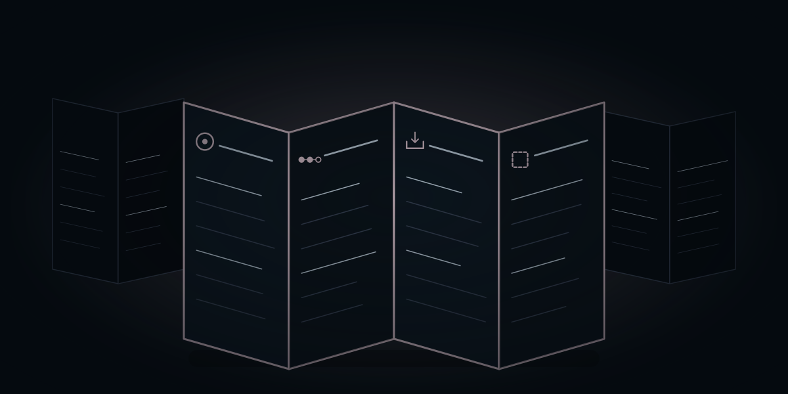

Forstå teknologien.
Find selskaberne bag.
Udforsk den teknologiske udvikling, se hvilke selskaber der gør den mulig, og følg hvordan den viser sig i deres forretninger og i fonden.
Fondens udvikling
Hvad er du nysgerrig på?
Gå direkte til et tema. Hver side har sin egen forklaring, interaktive tegning og vej til selskaberne.

Chips og halvledere
Hvilken del af chippen er selskabets forretning?
24,31 % af fonden · Udforsk temaet →
Datacentre
Hvad skal der til for, at maskinerne arbejder sammen?
12,59 % af fonden · Udforsk temaet →
Software & AI
Hvilken opgave er kunden afhængig af at få løst?
2,35 % af fonden · Udforsk temaet →
Råstoffer
Hvor i vejen fra råstof til materiale arbejder selskabet?
6,69 % af fonden · Udforsk temaet →
Robotter & fysisk AI
Leverer selskabet en sans, styringen eller hele maskinen?
7,23 % af fonden · Udforsk temaet →
Kvantecomputere
Hvad er demonstreret, og hvad er faktisk en forretning?
1,57 % af fonden · Udforsk temaet →Rumfart
Er produktet en opsendelse, en forbindelse eller data?
5,99 % af fonden · Udforsk temaet →
Platformsøkonomi
Hvem bruger platformen, og hvem betaler den?
10,56 % af fonden · Udforsk temaet →
Krypto
Hvilken aktivitet giver selskabet en indtægt?
4,07 % af fonden · Udforsk temaet →
Sundhed og biotek
Hvilket produkt er dokumenteret, og hvem betaler?
1,77 % af fonden · Udforsk temaet →
Energi og elnet
Hvor i energisystemet leverer selskabet sin løsning?
16,96 % af fonden · Udforsk temaet →Fintech
Hvem betaler for en gratis betaling?
4,41 % af fonden · Udforsk temaet →Andele af hele fonden, afdelingen PMINDI pr. 16.10.2026. Fondens data. Temaerne er NewDeal Invests egen opdeling.